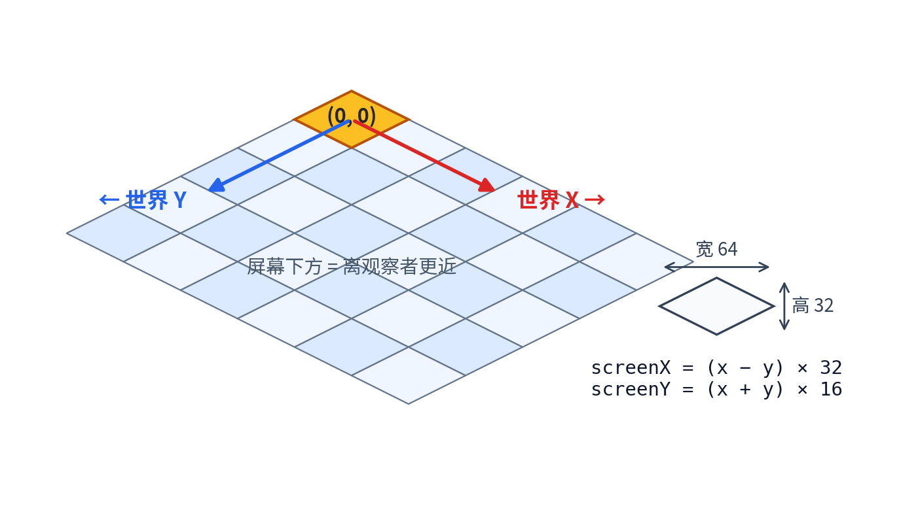
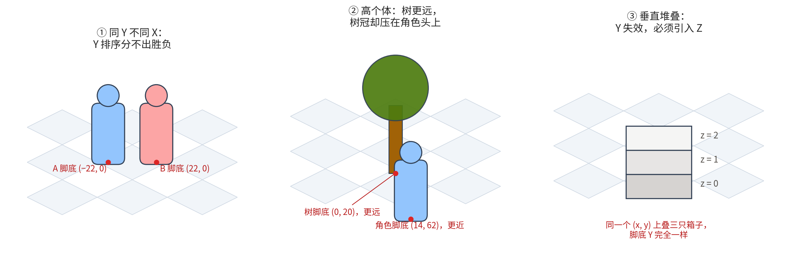
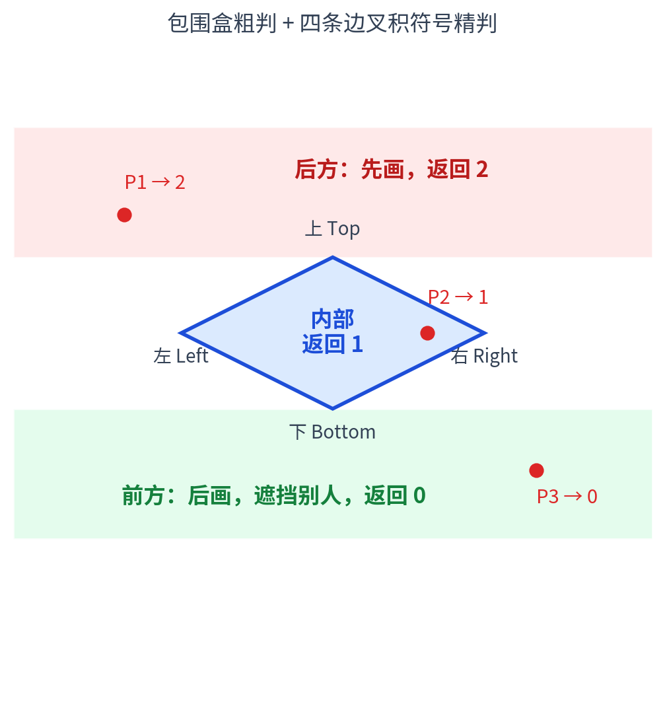
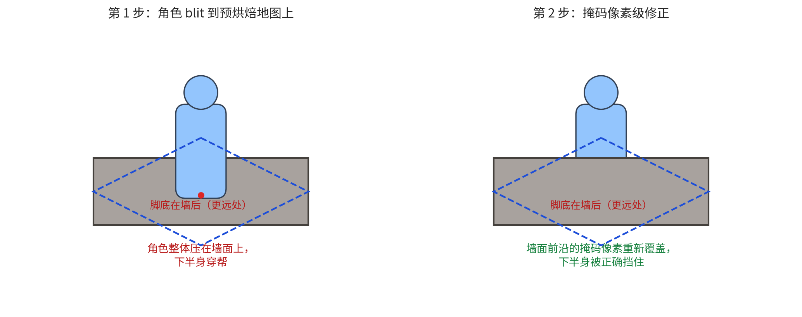
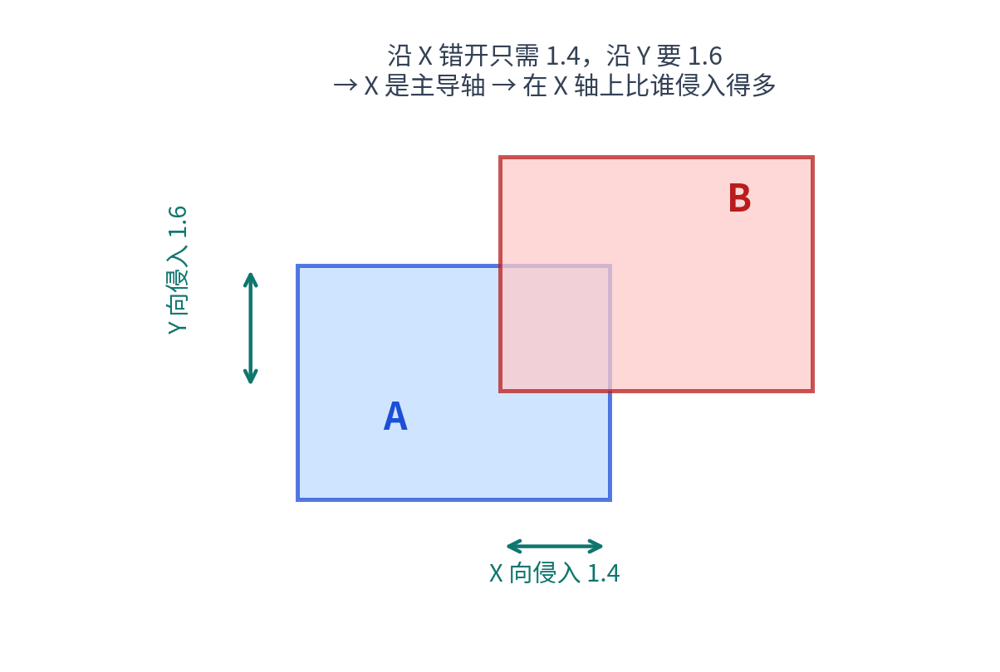
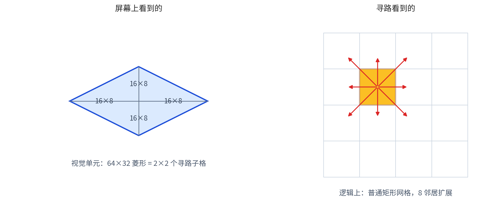

等距视角（Isometric）游戏开发教程：从菱形瓦片到遮挡排序
2026年09月04日 星期五等距视角（Isometric）是游戏史上生命力最强的视觉方案之一。从《模拟城市》《帝国时代》到《暗黑破坏神》，再到千禧年前后一大批国产 2D 网游，这种"斜 45 度俯瞰"的画面撑起了整整一个时代。我早年参与过几款这类 2.5D 网游客户端的开发，后来也研究过现代引擎里的同类系统，发现这道题的两代答案恰好构成一条非常好的学习路径：同一个问题，在"只有软件光栅"和"有现代引擎"两种约束下，会演化出两套截然不同但同样精巧的架构。
这篇教程就把这条路径完整走一遍：从坐标系起步，到地图渲染，再到这类游戏真正的技术核心——遮挡排序——最后收在寻路和性能工程上。文中的代码都是示意性的 C++ 伪代码，重在表达结构而非可直接编译。
〇、先厘清概念：它其实不是"真"等距
学术定义的 isometric projection（等轴测投影）要求三个坐标轴两两夹角 120°，俯角约 35.26°，菱形瓦片的宽高比为 √3:1 ≈ 1.73:1。而游戏里实际用的几乎都是 2:1 dimetric（二轴测）：菱形宽是高的两倍，等效俯角 atan(0.5) ≈ 26.57°。
为什么游戏业集体选择 2:1？因为像素。2:1 的斜边在像素网格上正好是"横 2 点、纵 1 点"的完美阶梯，线条干净无锯齿；而 √3:1 是无理数比例，画出来全是毛边。所以业内说的"Isometric 游戏"，默认就是 2:1 dimetric，本文也沿用这个惯例。
这类游戏的核心矛盾只有一句话：2D 渲染管线没有深度缓冲（Z-buffer），屏幕上谁挡住谁，完全由绘制顺序决定。 先画的会被后画的盖住——这就是"画家算法"（Painter's Algorithm）。于是"每个对象第几个画"就成了整套引擎的题眼，本文一半的篇幅都在围绕它展开。
一、坐标系：一切的起点
等距游戏里至少存在三套坐标，新手最容易在这里迷路：
- 逻辑格坐标 (x, y)：游戏逻辑的世界。寻路、碰撞、存档都在这个坐标系里，单位是"格"；
- 屏幕像素坐标 (screenX, screenY)：位图和显示的世界，单位是像素；
- 视口坐标：屏幕坐标减去相机原点，只是前者的平移。
逻辑格到屏幕像素的变换，是所有教程的第一页：
// 一个逻辑格投影到屏幕上是一个 64×32 的菱形（2:1）
const int TILE_W = 64; // 菱形宽
const int TILE_H = 32; // 菱形高
void WorldToScreen(int x, int y, int& sx, int& sy) {
sx = (x - y) * (TILE_W / 2); // (x - y) * 32
sy = (x + y) * (TILE_H / 2); // (x + y) * 16
}
void ScreenToWorld(int sx, int sy, int& x, int& y) {
x = (sx / 32 + sy / 16) / 2; // 整数运算，落地时向下取整
y = (sy / 16 - sx / 32) / 2;
}
几何直觉很简单：世界 X 轴在屏幕上指向右下，世界 Y 轴指向左下，两个方向各走一步，屏幕 Y 就下移一格菱形的高度。于是屏幕上出现了一个天然秩序——screenY 越大，位置越靠屏幕下方，离观察者越近。请记住这句话，它是后面所有排序算法的地基。

鼠标拾取是反方向的问题：玩家点了一个像素，要知道点的是哪一格。先用 ScreenToWorld 拿到候选格，再做一次点-菱形测试修正误差——因为菱形的四个角区域属于相邻格：
// 判断点 (px, py) 在菱形 (cx, cy) 内的哪个区域
// 利用 2:1 斜率：|dx| / 32 + |dy| / 16 <= 1 即在菱形内
bool PointInDiamond(int px, int py, int cx, int cy) {
int dx = abs(px - cx), dy = abs(py - cy);
return dx * TILE_H + dy * TILE_W <= TILE_W * TILE_H / 2;
}
一个可以颠覆认知的观察
上面这套变换公式，教科书都会讲。但商业端游里有个更激进的做法：投影根本不在运行期做。 整张地图在美术管线里就用 3D 软件按等距视角烘焙成一整张 2D 位图，运行期只做一件事——把这张位图按相机原点偏移 blit 上去：
void Map::Draw() {
// m_Bitmap 是离线烘焙好的整张地图；m_CamX/m_CamY 是相机原点
Blit(-m_CamX, -m_CamY, m_Bitmap);
}
这个做法把"3D 渲染"问题降维成了"2D 像素合成"问题：运行期没有任何投影数学，位图坐标 = 屏幕坐标，所有系统（掩码、寻路、对象排序）共享同一套整数像素坐标，互相查询零转换。代价是内存和美术管线的复杂度，换来的是运行期极致的简单和稳定。这个"离线扛复杂度、在线扛性能"的思路会贯穿全文。
二、画地图：从逐瓦片到整图烘焙
入门级的等距地图是双重循环逐瓦片绘制，用到一个关键技巧——错位（staggered）摆放：
for (int row = 0; row < rows; ++row) {
for (int col = 0; col < cols; ++col) {
// 奇数行横向错开半格，纵向每行下移 1/4 格
int sx = col * (TILE_W / 2) + (row % 2) * (TILE_W / 2);
int sy = row * (TILE_H / 2);
DrawSprite(tileSprite[map[row][col]], sx, sy);
}
}
逐瓦片方案灵活（可以运行时换瓦片、做编辑器），但商业 MMO 大多选择另一条路：美术在 3D 软件里搭好整个场景，用一台严格对齐的相机把它烘焙成位图。这台相机的参数是整条管线的灵魂：
| 参数 | 取值 | 作用 |
|---|---|---|
| 投影方式 | 正交（Orthographic） | 消灭透视变形，近处远处一样大 |
| 方位角 | 45° | 正对着一个格角看 |
| 仰角 | atan(0.5) ≈ 26.57° | 强制 2:1 dimetric 比例 |
| 像素比例 | 1 世界单位 = 1 像素 | 烘出来的位图运行期零缩放 |
同一场景通常烘两份产物：主位图（好看的画面）和遮挡掩码（每个抬高物——墙、房屋、树——的 alpha 剪影 + 它在位图里的外接矩形）。掩码的外接矩形角点要吸附到格网上，方便运行期按格索引。这份掩码数据是第五章的主角，先记住它的存在。
运行期因此朴素得近乎无聊：相机滚动只是改 (camX, camY) 两个整数，绘制是一次整图 blit。所有真正的复杂度都被推到了离线管线里。
三、画家算法与 Y 排序：80% 的场景一招就够
地图画完，轮到动态对象登场：玩家、NPC、掉落物品、魔法特效。它们没有深度缓冲可用，唯一武器是绘制顺序——从远到近画，近的盖住远的。
得益于第一节的那个观察（screenY 大 = 近），最简单的排序就是按脚底点的 Y 排：
struct Obj {
int x, y; // 脚底点（位图像素坐标）
Sprite* sprite; // 绘制时以脚底点为锚，向上画
};
// 每帧：按脚底 Y 升序排序，依次绘制
std::sort(objs.begin(), objs.end(),
[](Obj* a, Obj* b) { return a->y < b->y; });
for (Obj* o : objs) DrawSprite(o->sprite, o->x, o->y);
如果对象带逻辑格坐标，等价写法是 depth = x + y（正是 screenY = (x+y)×16 的单调性）。很多教程到这里就结束了，而它在实践中也确实能盖住大约八成的情况。但作为开发者必须清楚它在哪三种情况下会穿帮：

- 同 Y 不同 X：两个角色紧贴站在同一排，脚底 Y 几乎相等，Y 排序分不出先后，谁后画纯看运气，帧间可能来回闪；
- 高个体：一棵树的脚底比角色远（Y 更小），但高高的树冠在屏幕上越过角色的位置。按脚底 Y 排序，树先画、角色后画，角色的头会盖住树冠——视觉上角色像是从树冠"前面"挤过去的；
- 垂直堆叠：同一个格子上叠三只箱子，Y 完全一样，必须有 Z 维度参与。
剩下的章节，就是两代工程师对这三个问题的不同回答。
四、先把业务规则从几何里摘出来
进入几何精判之前，老道的工程师会先问一个问题：是不是所有遮挡关系都该由几何决定？
答案是否定的。网游里有一类铁律是业务定的：尸体必须躺在所有活人脚下；掉落物品要压在尸体上、但又被活人踩住；魔法特效永远飘在最上面。这类规则和几何无关，让几何排序去"碰巧"满足它们是危险的。
解法朴素而有效：桶预分类。绘制收集阶段按业务类型分桶，桶与桶之间是绝对的画家顺序，几何排序只在桶内发生：
class DrawQueue {
List m_DieList; // 尸体（躺平的）
List m_ItmList; // 地面物品
List m_ObjList; // 活物：NPC / 玩家 / 特效
void Collect(Obj* o) {
if (o->state == DEAD && o->frame >= FALL_FRAMES) {
InsertSorted(m_DieList, o); // 死透了：平躺的尸体
return;
}
if (o->type == ITEM) {
InsertSorted(m_ItmList, o);
return;
}
InsertSorted(m_ObjList, o); // 其余都是"站着的"
}
void Flush() { // 提交：严格按 尸体→物品→活物
DrawList(m_DieList);
DrawList(m_ItmList);
DrawList(m_ObjList);
}
};
注意第一个判断里的 frame >= FALL_FRAMES：角色死亡动画的倒下过程（前几帧）还是"站着的"，要和活人一起参与几何排序；只有播完、彻底躺平的那一帧起，才沉入尸体桶。一行代码把"濒死"和"尸体"两种视觉实体分开了——这种细节是调试无数个"尸体盖住活人"的 bug 换来的。
桶内排序用什么算法？答案可能出乎意料：插入排序。理由是一连串具体的工程事实，而不是教科书复杂度：
- 相邻两帧之间对象位置变化极小（角色每帧移动几个像素），待排序列近似有序——这正是插入排序均摊 O(N) 的场景；
- 可见对象经视口剔除后通常只有一两百个，N 太小，复杂算法的常数都收不回来；
- 用双向链表存桶，
InsertBefore是 O(1)，缓存友好，代码量最小。
void InsertSorted(List& list, Obj* o) {
for (Node* p = list.head; p; p = p->next) {
if (Compare(p->obj, o) >= 0) { // 找到第一个"不比 o 远"的位置
list.InsertBefore(p, o);
return;
}
}
list.AddTail(o);
}
整个收集-提交过程不维护任何跨帧状态：每帧重新分桶、重新排序、画完即弃。在对象数量受视口约束的前提下，这种"无状态"换来的是绝对的健壮——不会出现增量排序里常见的"某帧忘了更新导致永久错乱"。
五、近距离仲裁：静态掩码方案（端游时代的答案）
现在处理硬骨头：同一桶里两个紧贴的对象，Y 排序失灵时怎么办？
两段式比较：远的走捷径，近的才精算
第一个洞察是绝大多数对象对根本不需要精判。回忆第一节：一个逻辑格在屏幕上是 64×32 的菱形。如果两个对象的脚底 Y 差超过 64（垂直跨两个以上菱形）、或 X 差超过 128，它们的菱形凸包在屏幕上根本不可能重叠——此时简单 Y 排序必然正确：
int Compare(Obj* a, Obj* b) {
int dx = a->x - b->x;
int dy = a->y - b->y;
// 快路径：离得够远，Y 说了算
if (dy > 64 || dy < -64 || dx > 128 || dx < -128)
return dy;
// 慢路径：近邻冲突，请"裁判"仲裁（下文）
for (Mask* m : QueryMasksNear(a->x, a->y - BODY_OFFSET)) {
int c1 = m->quad.Classify(a->x, a->y); // a 相对掩码：前/内/后
int c2 = m->quad.Classify(b->x, b->y); // b 相对掩码：前/内/后
if (c1 > c2 && dy >= 0) return -1; // a 在掩码之后且屏幕更低 → a 实际更远
if (c1 < c2 && dy <= 0) return +1; // a 在掩码之前且屏幕更高 → a 实际更近
}
return dy; // 没有掩码命中，退回 Y 排序
}
这个结构保证了：98% 的比较走 O(1) 快路径，只有极少数近邻冲突才进入掩码仲裁。几何精确性和排序性能兼得。
裁判从哪来：预烘焙的菱形包围框
仲裁需要一个"第三方参照物"，它就是第二章烘焙管线产出的静态掩码。每个抬高物（墙、房屋、大树）在烘焙期生成两份数据：逐像素的 alpha 剪影，以及一个 2:1 菱形包围框——由外接矩形的对角线反算而来：
struct Quad {
Point v[4]; // 固定顺序：上、左、下、右
// 只给外接矩形的对角线 (x1,y1)-(x2,y2)，强制反算出 2:1 菱形
void Make(int x1, int y1, int x2, int y2) {
int W = x2 - x1, H = y2 - y1;
int a = (2 * H - W) / 2; // 左右顶点相对上下对角线的水平外扩
int b = (2 * H - W) / 4; // 垂直外扩，保持 2:1 斜率
v[0] = {x1, y1}; // 上
v[1] = {x1 - a, y1 + b}; // 左
v[2] = {x2, y2}; // 下
v[3] = {x2 + a, y2 - b}; // 右
}
};
为什么用菱形而不是矩形做包围？因为等距世界里"前/后"的分界线本身就是斜的——一个 2:1 菱形的四条边恰好对齐世界坐标里的两条轴线方向，用它做"前/内/后"三区划分，几何含义最干净：

// 返回 0=前方（屏幕下方，会遮挡别人）1=内部 2=后方（屏幕上方）
int Quad::Classify(int px, int py) {
if (py < v[0].y) return 2; // 包围盒粗判：上面
if (py > v[2].y) return 0; // 下面
if (px < v[1].x || px > v[3].x) { // 左右两侧：看斜边再定
// …… 同样用叉积符号判断
}
// 包围盒内：对四条边各做一次叉积符号测试
// 叉积 > 0 表示点在这条边的"外侧后方/前方"
if (Cross(v[0], v[1], px, py) > 0) return 2; // 上边外侧 → 后
if (Cross(v[1], v[2], px, py) > 0) return 0; // 左边外侧 → 前
if (Cross(v[2], v[3], px, py) > 0) return 0; // 下边外侧 → 前
if (Cross(v[3], v[0], px, py) > 0) return 2; // 右边外侧 → 后
return 1; // 内部
}
于是仲裁逻辑水到渠成：两个近邻对象 A、B 谁脚底 Y 差不多，就看它们相对同一堵墙的菱形谁更"后"。Compare 里那个 (c1, c2, dy) 三元组判断，本质是在问：当掩码夹在两者之间时，谁该被它挡住？
两个工程细节值得单独说：
- 掩码按格建桶索引。掩码外接矩形吸附到 32×32 格网后，给地图建一个
桶[格W × 格H]数组，每格挂着覆盖它的掩码列表。查询时x/32, y/32一次定位，O(1) 拿到候选，每格通常只有 0–2 个掩码； - 查询点要上移一个身位。角色的脚底在地上，但墙体遮挡发生在身体高度那一带。所以查询掩码时不用脚底 Y，而是用
y - 身高偏移（比如 50 像素 ≈ 一格 + 半个身高），把查询点提到角色躯干的位置——那才是"身后那排格子"，遮挡关系最敏感的地方。这个偏移量硬编码是最常见的做法，代价是巨兽或幼儿体型会错位，讲究的做法是把身高存进对象数据。
收尾：像素级遮挡修正
排序解决的是"谁先画"，但还有一类残留问题：角色站在墙后，排序再正确，角色的整张 sprite 还是会压在墙面像素上（因为墙是烘焙进地图位图的，角色是后画的）。做法是画完角色后，用同一份掩码做一次修正：算出角色 sprite 覆盖的格子范围，把那些"在角色前方"的掩码像素重新 blit 一遍，把穿帮的下半身抹掉。

注意这里的美感：排序仲裁用的是菱形包围框，像素修正用的也是它——同一个几何对象，先在对象级做粗判定，再在像素级做精修正，两处结论天然一致，不会出现"排序说在墙后、修正却往墙前抹"的自相矛盾。
最后一块拼图是视口剔除前置：对象进桶之前先用 脚底点 ± 安全余量（约 100 像素，照顾"脚底出屏但上半身还在屏内"的高个子）过滤掉离屏对象。注意剔除只发生在进桶前，桶内绝不再剔——因为遮挡判定要求 A 知道 B 的存在，哪怕 B 自己不会被画出来。
六、现代引擎的另一条路：依赖图与拓扑排序
时间快进到现代引擎时代。约束变了：对象不再是"一张 sprite + 一个脚底点"，而是带完整三维包围盒（AABB）的实体；渲染管线支持按 Z 值自动排序；CPU 也快了几个数量级。同样的排序问题，演化出一套截然不同的解法：把"谁挡谁"建模成有向依赖图，把"画在哪一层"建模成显式深度分配。
第一步：两个物体谁画前面——穿透深度与主导轴
判定的输入是两组世界坐标 AABB（最小角点 + 尺寸）。思路分两层：
- 需要排序吗？ 两个 AABB 在 X/Y 平面有投影交叠、且 Z 向高度也有交叠，才可能产生遮挡；
- 谁在前？ 计算三个轴上的"穿透深度"——沿哪个轴把两者错开所需的距离最短，那个轴就是主导轴（它们是"最不可能分离"的方向）；在主导轴上，侵入对方更多的那一方画在前面。

// 返回 true 表示 "b 应画在 a 前面"
bool Depends(Vec3 aMin, Vec3 aSize, Vec3 bMin, Vec3 bSize) {
Vec3 aMax = aMin + aSize, bMax = bMin + bSize;
// 高度不交叠（一个在另一个正上方且足够高）→ 无遮挡关系
bool overlapZ = (bMax.z > aMin.z) && (aMax.z > bMin.z);
bool overlapXY = (aMax.x > bMin.x) && (aMax.y > bMin.y);
if (!overlapZ || !overlapXY) return false;
// 三个轴上的互相侵入量
Vec3 dA = {aMax.x - bMin.x, aMax.y - bMin.y, bMax.z - aMin.z};
Vec3 dB = {bMax.x - aMin.x, bMax.y - aMin.y, aMax.z - bMin.z};
// 沿各轴错开所需的最小距离；越小越"难舍难分"
Vec3 dP = aSize + bSize - Abs(dB - dA);
if (dP.x <= dP.y && dP.x <= dP.z) return dA.x > dB.x; // X 主导
if (dP.y <= dP.x && dP.y <= dP.z) return dA.y > dB.y; // Y 主导
return dA.z > dB.z; // Z 主导（垂直堆叠）
}
注意这个判定天然解决了第三章的三个失效场景：垂直堆叠由 Z 轴主导轴处理；高个体因为 AABB 有真实高度而自动正确；同 Y 紧贴的对象由 X 或 Y 主导轴分胜负。一次判定，O(1)。
第二步：从两两关系到全局顺序——拓扑排序
每对重叠对象产生一条依赖边（"A 依赖于 B" = B 先画），全场景的遮挡关系就构成一张有向图。把它变成线性绘制顺序，用深度优先遍历：
float Place(Obj* o, float startDepth) {
if (o->placed) return startDepth; // 防重入，顺带破环
o->placed = true;
for (Obj* dep : o->depends) // 先递归安置所有"比我远"的
startDepth = Place(dep, startDepth);
o->z = startDepth; // 给 o 分配独占的深度层
return startDepth + o->zExtent + STEP; // 下一个对象从"我的顶"开始
}
三个设计点：
placed标志位一箭双雕：既是 DFS 的访问标记，又在依赖边意外成环（边界几何下双向判定可能都成立）时先到先得、直接破环，不会死循环；- 独占 Z 区间：每个对象分到
[startDepth, startDepth + extent + STEP)这一段谁都不会用的深度。这带来一个美妙性质——即使帧间遍历顺序变化导致 Z 值不同，区间互不重叠 ⇒ 画面上的遮挡关系不变 ⇒ 绝不闪烁。稳定性不是靠"稳定排序算法"，而是靠几何上根本不可能重叠来保证的； - 分到的 Z 直接写进对象的渲染坐标，让引擎的标准管线自然按 Z 绘制，算法与渲染完全解耦。
第三步：别做无用功——空间索引与脏标记
两两判定是 O(N²)，一个屏幕几百个对象就不能接受。配套的两件套：
- 四叉树空间索引：按对象的屏幕包围盒建索引，每个对象只和相邻节点里的候选做依赖判定，总复杂度降到 O(N·K)，K 是平均邻居数（典型场景 5–20）。树支持增量移动（
MoveItem：没越界就只更新包围盒），节点和条目用对象池复用，稳态零 GC； - 脏标记（dirty flag）：对象移动/缩放/进出视口才打脏；每帧只重建脏对象的依赖边；如果整帧没人变脏，拓扑排序整段跳过——静态场景的排序开销是零。
两代方案对比
| 维度 | 端游方案（第五章） | 现代方案（第六章） |
|---|---|---|
| 对象模型 | 脚底点两个整数 | 完整 3D AABB |
| 参照物 | 预烘焙静态掩码（菱形） | 对象两两互判 |
| 全局顺序 | 桶 + 插入排序 | 依赖图 + DFS 拓扑排序 |
| 深度表达 | 隐式（绘制顺序本身） | 显式（独占 Z 区间） |
| 静态开销 | 每帧全量重排 | 脏标记，静态零开销 |
| 邻居发现 | 32×32 格桶索引 | 四叉树 |
| 擅长 | 海量同类型 sprite，软光栅 | 2D/3D 混合、垂直堆叠、动态场景 |
| 软肋 | 动态对象互遮挡靠掩码兜底 | 旋转物体的屏幕 AABB 会低估 |
没有优劣，只有约束不同：一个要把每一次 CPU 运算都省下来喂给软光栅 blit，一个可以大方地建图、遍历、分配浮点深度。看懂约束如何塑造架构，比记住任何一个算法都重要。
七、移动与寻路：别用菱形格
一个反直觉的结论：等距游戏的寻路网格不是菱形，是矩形子格。
菱形是视觉概念，不是网格概念——它没有干净的"邻居"定义（边相邻？点相邻？），写起寻路来处处别扭。实践中的做法是把每个 64×32 菱形再细分成 2×2 = 4 个 16×8 的矩形子格，寻路在这张普通矩形网格上做标准 8 邻居扩展：
// 子格粒度：宽 = 格宽/2，高 = 格高/4
const int SUB_W = 16, SUB_H = 8;
// 8 邻 BFS / A*：就是最普通的矩形网格寻路
const int DIRS[8][2] = {
{-1,0},{1,0},{0,-1},{0,1}, // 四邻
{-1,-1},{1,1},{1,-1},{-1,-1} // 四对角
};

16×8 这个 2:1 比例不是随便选的：它让子格在屏幕上恰好贴合等距空间的视觉形状（每个菱形里正好走 4 个位置），同时保持矩形网格的所有便利——数组下标直接映射、8 邻居扩展是轴对齐偏移、对角移动代价好算。
还有一个值得抄的数据设计：障碍图和寻路距离场共享同一块内存。两者粒度完全相同（都是 16×8 子格、同样尺寸的数组），寻路时直接在障碍图上做 BFS 写距离、回溯时读出来。零冗余，一致性自动成立——永远不会出现"障碍更新了但寻路缓存忘了刷"。
八、进阶话题速览
高度与地形起伏。 给每格加 z 坐标后，绘制位置向上偏移 z × 层间距，深度公式相应变成 depth = x + y + z。老方案里这体现为掩码的"身高偏移"和多层地图位图；新方案里 Z 本来就是 AABB 的一个轴，直接免费。
性能清单。 按投入产出排序：① 视口剔除永远前置，这是数量级级的优化；② 排序数据结构选链表 + 插入排序，利用帧间相干性；③ 空间索引（格桶或四叉树）把邻居发现降到 O(N·K)；④ 脏标记让静态场景零开销；⑤ 对象池消灭逐帧分配。
陷阱清单（都是真 bug 的坟头）：
- 比较器不满足严格全序没关系——插入排序不依赖传递性，但别把它塞进
std::sort，后者遇到矛盾比较器是未定义行为； - 依赖图成环是几何必然，不是 bug，破环策略（先到先得）要提前设计好；
- 旋转过的物体，用 4 个角点投影求屏幕 AABB 会低估——要么用 8 角，要么接受偶发剔除错误；
- 业务层叠（尸体/物品/特效）永远不要交给几何排序"顺便"处理；
- 屏幕坐标投影求 AABB 时，等距变换下矩形的极值点不一定在角上——这是剔除和依赖判定共用的暗坑。
结语
等距视角游戏的技术栈，本质上是在回答一个问题：如何用确定性的 2D 手段，模拟出 3D 空间的遮挡秩序。
这条教程走下来的路径是：坐标系确立"Y 即深度"的地基 → 预烘焙把投影赶出运行期 → 画家算法 + Y 排序解决大多数问题 → 桶分类把业务规则从几何中剥离 → 静态掩码仲裁近距离冲突 → 现代方案用依赖图和拓扑排序把问题一般化 → 寻路回归矩形网格。
今天写等距游戏，你可能直接用引擎的 YSort 或 sortingOrder 就解决了 80% 的需求。但当角色穿模、物体闪烁、排序错乱的那一天到来时，希望这篇教程能让你知道：脚下的每一寸土地，都是两代工程师踩着实实在在的坑填平的。